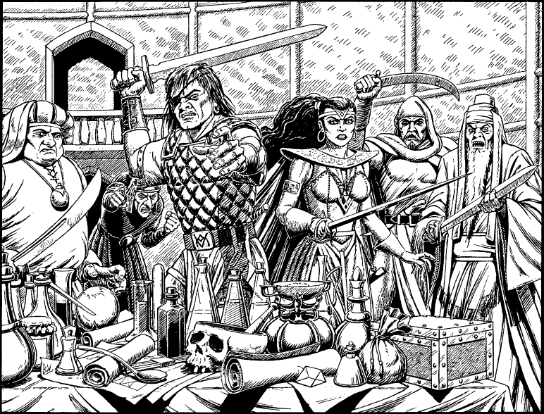

84
A sudden sound makes you spin on your heel and instinctively you crouch down ready for combat. A small group of people, dressed in costumes that look vaguely familiar, are marching along the corridor towards the balcony. To avoid them, you hurry down a narrow stair that leads to the hall below and take cover behind the overladen table. From your hiding place you observe the group make their entrance. There are six of them: four men, one woman, and one other who walks with a stoop at the centre of the group and whom you cannot see clearly. You concentrate on their clothing, for there is something about its cut and style that is definitely familiar, yet you cannot pinpoint what it is. Then suddenly you recognize it, and the shock makes you draw breath: they are wearing Sommlending costumes. The five visible faces are now all too familiar to you: Luvias Kort, the Poisoner of Tyso; Falco, highwayman and cut-throat; Aieta Nematah, the Wytch of the Kirlundin Isles; Porgron, murderer; and Gardor Vezh, Chief Druid of Malis Mound, necromancer and cannibal. These are five of Sommerlund’s most notorious criminals, all of whom were sentenced to be thrown into the Shadow Gate of Toran for their crimes.
Five pairs of startled eyes glare at the table, alerted by your gasp, and the slick sound of blades leaving oiled scabbards soon follows. The four men and the woman, Aieta, raise their swords and step forward to challenge you. As they move apart you see the sixth member of their group clearly and an icy chill runs down your spine. Slowly you shake your head in disbelief as your stare is returned by the cold, malicious eyes of Vonotar the Traitor.

‘Long have I waited for the chance to enact my revenge on you, Lone Wolf,’ he hisses, his loathsome voice filling the hall with sibilant echoes, ‘and now my time has come. Kill him!’ he screams, maniacally, and the five spring forward, eager to obey his command.
Villains of Sommerlund: COMBAT SKILL 38 ENDURANCE 46
You cannot evade this combat and must fight all five enemies to the death.
If you win the combat, turn to 120.